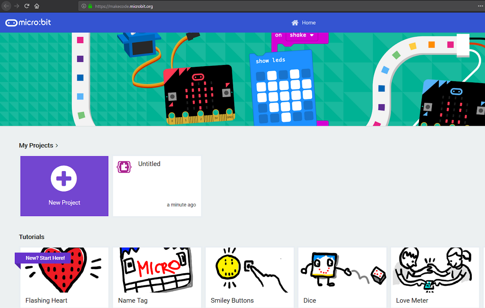
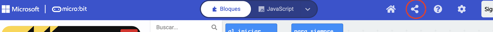
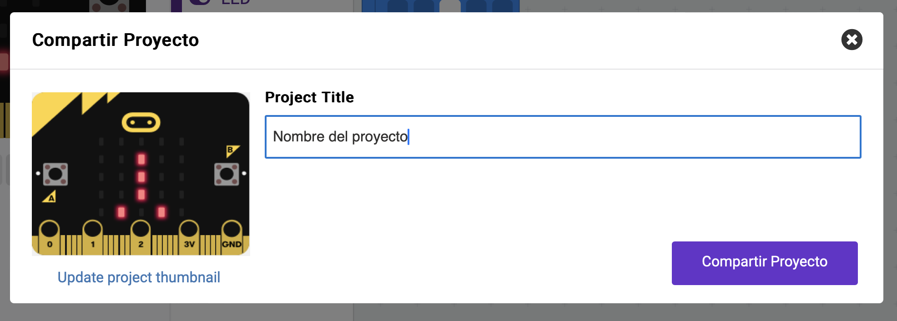
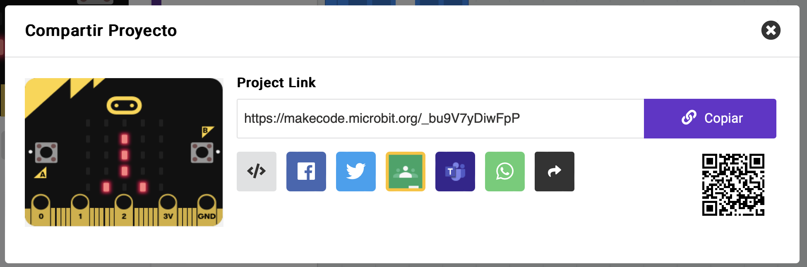
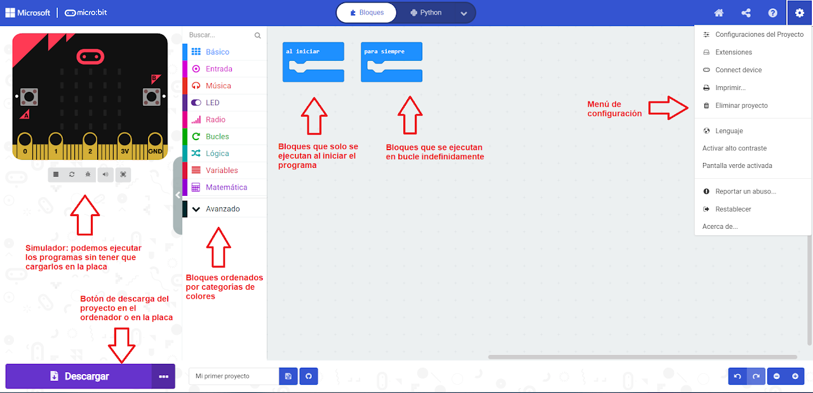

Para programar nuestra placa tenemos varias opciones. Se puede programar incluso desde Scratch, añadiendo un conjunto de bloques de Micro:bit para Scratch. Sin embargo, en los ordenadores del instituto no nos va a funcionar ese método, por lo que usaremos la página de Makecode, de la empresa Microsoft, a través de la cual podemos programar nuestra Micro:Bit desde un navegador de Internet, conectando la placa al ordenador mediante un cable USB.
En la página de Makecode disponemos de una placa Micro:bit virtual para probar nuestro código sin necesidad de tener que pasarlo todo el rato a la placa física. Hasta que no compruebes que funciona todo bien en el simulador, no debes intentar pasar el código a la placa.

Cuando accedemos a Makecode nos aparece la página anterior, donde podemos ver nuestros proyectos o crear uno nuevo y donde podemos seguir varios tutoriales muy interesantes.
Guardar y compartir tu trabajo en Makecode
No es necesario registrarnos en la página de Makecode y sin embargo, guarda nuestros proyectos en la caché del navegador. Si trabajas en casa, verás que cada vez que entres en la página estarán todos los proyectos que hayas hecho. Sin embargo, en el instituto los ordenadores vuelven a su estado inicial cada vez que se reinician, por lo que no se te va a guardar el trabajo de un día para otro.
Lo que harás para tener a salvo tu trabajo es compartirlo mediante un enlace. Esto también te va a servir para entregar tus prácticas en la tarea de Classroom. Para hacer esto, tendrás que dar lo siguientes pasos:
1 - Pulsar en el botón de compartir proyecto, que encontrarás en la barra de menú cuando estés programando:

2 - Se te abrirá una ventana donde tienes que poner el nombre del proyecto:

3 - Cuando pulses el botón "Compartir Proyecto", la pantalla cambiará y te mostrará el enlace a tu proyecto:

4 - Pulsando en el botón "Copiar" habrás copiado el enlace y ya lo puedes añadir, pegándolo, a la tarea de Classroom.
|
En la siguiente imagen podemos ver las partes principales de la página de Makecode.
